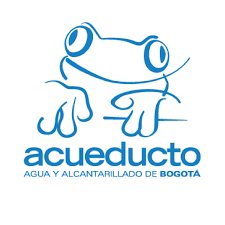

Descripcion
Profesional comprometido en ofrecer
un servicio excepcional con más de 6
años de experiencia en diferentes
procesos administrativos y de gestión
humana, con gran iniciativa, agilidad
y capacidad de resolución de
problemas. Orientado al detalle, con
excelentes habilidades de
planificación, organización y gestión.
Dedicada a brindar la mejor atención
al cliente interno y externo, con conocimiento
en normas Iso, siigo, world office, java, python, bases de datos relacionales y no relacionales,
node.Js, loopback4, C#, y angular.
Experiencia
1 SERVCIO AL CLIENTE - BANCO ITAU
➢ Gestión empática y serena de las quejas de los usuarios.
➢ Atención al cliente tanto telefónicamente, como por correo electrónico y cara a cara.
➢ Participación proactiva en creación de formatos, y aplicativo para registro de visitantes.
➢ Certificación, recopilación y análisis de información de portales bancarios.
➢ Manejo de agenda, bases de datos, plataforma Speedy, acople documental y verificación de
salidas de activos.
2 ASISTENTE SEGURIDAD Y SAUD EN EL TRABAJO ACUEDUCTO Y ALCANTARILLADO DE BOGOTA
➢ Actualización del plan de seguridad y salud en el trabajo.
➢ Inspecciones de puesto y panoramas de riesgos.
➢ Programación de informes de entrenamiento y capacitación.
➢ Informes mensuales a gerencia.
➢ Elaboración de formatos de inspección de vehículos.

3 ASISTENTE DE TALENTO HUMANO FERRETERIA REINA
➢ Selección, Contratación.
➢ Incapacidades de recobro de cartera vencida.
➢ Reporte de novedades, certificaciones laborales, pago de
planilla, elaboración de nómina, manejo de horas extras

4 ASISTENTE DE GESTION HUMANA BICICLETAS MILAN
➢ Selección, entrevistas, afiliaciones a seguridad social,contratación, manejo de personal,
certificaciones laborales,
procesos disciplinarios.
➢ Nomina, pago seguridad social, Reporte de novedades.
➢ Salud ocupacional, informe de accidentes.
➢ Inventarios.
➢ facturación.
➢ Manejo de proveedores.